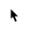
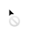

Dentro de um layout, botões servem para destacar ações importantes a serem tomadas. Acompanhe abaixo um exemplo de tipos e propriedades.
| botão primário | botão secundário | botão terciário | cursor | |
|---|---|---|---|---|
| default |  | |||
| hover | ||||
| focus | ||||
| disabled |  | |||
| loading | ||||
| movable | |
Interaja com os botões e observe a mudança de aparência e de cursores